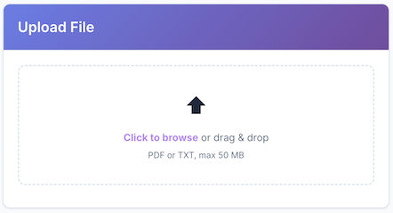
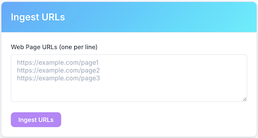
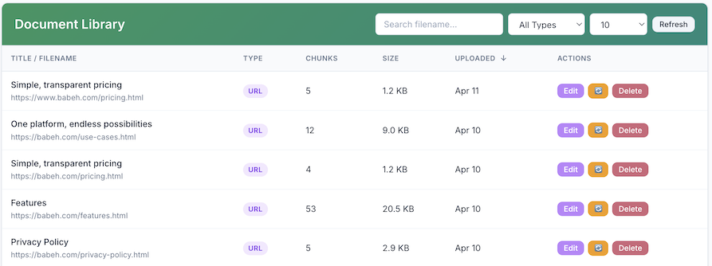

Knowledge Base
Upload documents, ingest web content, and manage your document library — the foundation of your AI-powered search.
editor manager superadmin
Upload Files
Upload documents that will be automatically processed, chunked, and indexed for both semantic (vector) and keyword (BM25) search.
How to Upload
- Navigate to Knowledge Base from the sidebar.
- In the Upload File card, either drag and drop a file onto the upload area, or click Browse to select a file.
- The file will be uploaded, processed, chunked, and indexed automatically.
- A progress indicator shows the processing status.
- Once complete, the document appears in the Document Library below.

Supported File Types & Limits
| Property | Value |
|---|---|
| Supported formats | .pdf, .txt |
| Maximum file size | 2 MB |
| Text encoding (TXT) | UTF-8, UTF-16, Latin-1, CP1252 (auto-detected) |
- PDF files must contain extractable text (scanned images without OCR will result in empty content).
- Only
.pdfand.txtextensions are accepted. - Files larger than 2 MB will be rejected with an error message.
How Chunking Works
When a file is uploaded, the text content is split into smaller pieces called chunks. Each chunk is then:
- Embedded into a 1024-dimensional vector using Cohere's multilingual model → stored in Vector DB
- Indexed for full-text keyword search → stored in SQL DB FTS5
1024-dim vectors] C -->|"Chunk 1, Chunk 2, ..."| E[FTS5 Indexing
BM25 keywords] D --> F[(Vector DB)] E --> G[(SQL DB)] style A fill:#3B82F6,color:#fff style D fill:#8B5CF6,color:#fff style E fill:#F59E0B,color:#fff style F fill:#8B5CF6,color:#fff style G fill:#F59E0B,color:#fff
| Setting | Default | Range | Description |
|---|---|---|---|
| Chunk Size | 500 characters | 100 – 10,000 | Number of characters per chunk. Larger chunks provide more context but may reduce precision. |
| Chunk Overlap | 50 characters | 0 – 5,000 | Characters shared between consecutive chunks to prevent information loss at boundaries. |
Chunk size and overlap are configured in Settings. Changing these values only affects newly uploaded documents. Use Re-index to re-chunk existing documents with new settings.
Ingest URLs
Scrape and ingest content from web pages. BABEH automatically extracts the main article content, strips navigation/ads, and processes it the same way as uploaded files.
How to Ingest URLs
- Navigate to Knowledge Base from the sidebar.
- In the Ingest URLs card, paste one or more URLs into the text area — one URL per line.
- Click Ingest. Each URL is processed sequentially with a progress bar.
- Successfully ingested pages appear in the Document Library with type "URL".

BABEH uses trafilatura as the primary content extractor with a BeautifulSoup4 fallback. It intelligently extracts the main article content while filtering out navigation bars, footers, ads, and other boilerplate.
Document Library
The Document Library is a searchable, sortable table of all uploaded files and ingested URLs.

Table Fields
| Column | Description |
|---|---|
| Filename | Original filename or URL title |
| Type | File type badge: PDF, TXT, or URL |
| Chunks | Number of text chunks created from this document |
| Size | Original file size (in KB or MB) |
| Upload Date | When the document was uploaded or ingested |
| Actions | Edit, Re-index, and Delete buttons |
Filtering & Sorting
- Search — Type in the search box to filter documents by filename.
- Type filter — Switch between All, Files, or URLs.
- Sort — Click column headers to sort by chunks, size, or date.
- Pagination — Choose 10, 25, or 50 items per page.
Document Actions
Edit
Opens the document in an edit modal where you can:
- Rename the document (filename field)
- Edit content directly in a text editor — changes trigger automatic re-chunking and re-embedding
- Use KBC AI Improvement to get AI-powered rewriting suggestions (see below)
Re-index
Re-processes the document using the current chunk settings. Useful when you've changed chunk size or overlap in Settings and want existing documents to use the new values.
- Single document — Click the Re-index button on a specific row.
- All documents — Use the "Re-index All" button at the top of the library. Progress streams via real-time SSE updates.
When your current chunk settings differ from those used when a document was ingested, a yellow warning banner appears suggesting you re-index. This ensures all documents use consistent chunking for optimal search quality.
Delete
Permanently removes the document from all stores:
- Chunks removed from Vector DB (vector embeddings)
- Chunks removed from SQL DB FTS5 (keyword index)
- Original file removed from disk
- Metadata removed from SQL DB documents table
Deleting a document cannot be undone. You will need to re-upload the original file if needed.
KBC Content Improvement (AI)
The KBC Content Improvement feature uses AI to analyze your document content and suggest rewrites that improve search retrieval quality.
How to Use
- Open a document via the Edit button.
- In the edit modal, find the KBC Improvement panel.
- Click "Generate Suggestion" — the AI analyzes the content and proposes improvements.
- Review the suggestion. Click "Use Suggestion" to apply it to the editor, or "Use & Save" to apply and save immediately.
(temperature: 0.3) LLM-->>Editor: Return improved content Editor->>User: Display suggestion preview User->>Editor: Click "Use & Save" Editor->>DB: Save updated content DB-->>Editor: Re-chunk + Re-embed Editor->>User: Yes Document updated
The AI rewrites content to be more structured, keyword-rich, and retrieval-friendly — meaning your search engine will find more relevant results. It uses a low temperature (0.3) to stay faithful to the original content while improving clarity.
Collection Info
Below the Document Library, a Collection Info section shows VectorDB statistics:
- Total vectors — Number of embeddings stored in Vector DB
- Collection name — The Vector DB collection identifier
- Embedding model —
cohere.embed-multilingual-v3(1024 dimensions)